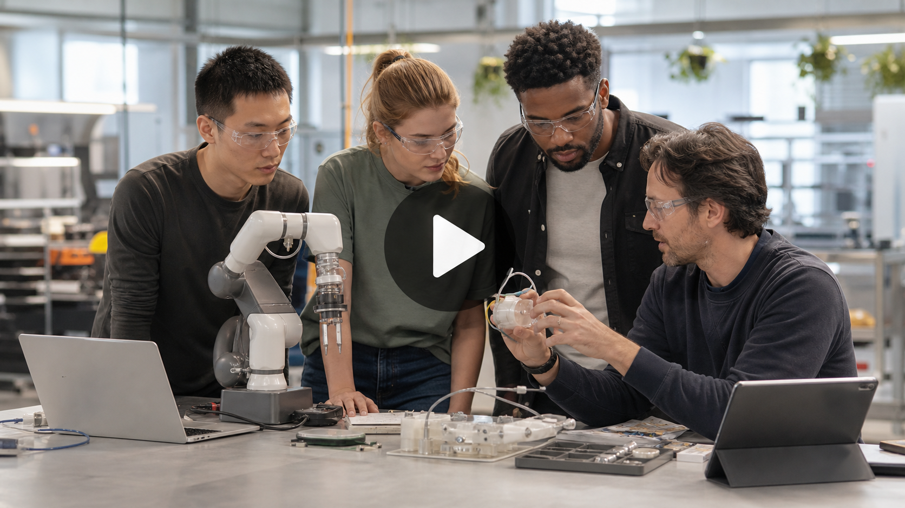
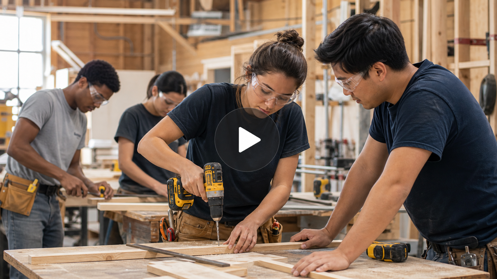

Career
LaunchPAD
Watch real Canadians, real careers, real next steps.
View more
→

Watch: Emerging Careers

Watch: Day in the Life
Take it to your phone
‹
›
![QR code linking to Career LaunchPAD. URL: https://launchpad.myblueprint.ca/?utm_source=myblueprint&utm_medium=widget&utm_campaign=career-launchpad-v1&utm_content=qr-handoff — scan or open on your phone to continue.]()